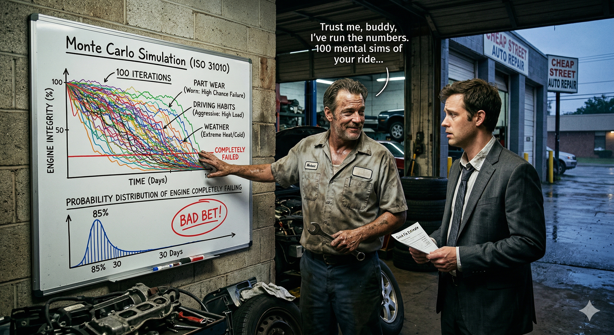

FADE IN: A grimy auto shop. Engine parts everywhere. VINCE (50s, oil-stained hands, cigarette behind ear, knows every engine ever made) leans against a workbench. TERRELL (30s, impatient, car keys jangling) stands across from him. TERRELL Just patch the head gasket, Vince. I don't need a full rebuild. I need the car running by Friday. VINCE (wiping hands on a rag) I can patch it. But I'm not gonna. And I'm gonna tell you why with math, not feelings.
VINCE You want a quick fix. You're thinking: patch it, it holds, I drive. One outcome. One straight line. But that's not how engines work. That's not how ANYTHING works. TERRELL What do you mean? VINCE I mean there's not one future for your car. There's a thousand futures. And most of them end with you on the side of the highway at 2 AM. He grabs a clipboard. VINCE (CONT'D) See, a single estimate — "it'll probably be fine" — is worthless. What you need is a probability distribution. A picture of ALL the possible outcomes and how likely each one is. That's what Monte Carlo simulation gives you.
Vince draws three columns on the clipboard. VINCE Your engine's fate depends on three random variables. Things I can't predict exactly, but I can estimate their ranges. He labels them: VINCE (CONT'D) Variable one: Part Wear Rate. That patched gasket could last anywhere from 2,000 to 15,000 miles. Most likely around 6,000. That's not a fixed number — it's a distribution. Bell-shaped, skewed toward the low end because it's a patch, not a replacement. TERRELL Okay... VINCE Variable two: Your Driving Habits. You drive like a normal person? Or do you floor it on the highway? I'd estimate your stress factor ranges from 0.8 (gentle) to 1.5 (aggressive). Based on those bald tires, I'm guessing you skew high. TERRELL (defensive) I drive normal. VINCE Sure. Variable three: Weather and Temperature. Summer heat expands metal. Winter cold contracts it. Temperature cycling ranges from mild to severe depending on the season. Each cycle stresses the patch.
VINCE Now here's what I do. In my head — and I've been doing this for thirty years — I run the simulation. Not once. Not twice. A hundred times. TERRELL A hundred times? VINCE Each time, I randomly pick a value for each variable from its range. Random gasket life. Random driving stress. Random weather pattern. Then I calculate: does the engine survive 12 months? He starts scribbling. VINCE (CONT'D) Iteration one: Gasket lasts 8,000 miles, you drive gentle, mild winter. Engine survives. Iteration two: Gasket lasts 3,000 miles, you drive hard, brutal summer. Engine fails at month four. Iteration three: Gasket lasts 6,000, moderate driving, average weather. Fails at month nine. TERRELL You're just making up numbers. VINCE I'm SAMPLING from distributions. There's a difference. Each iteration is equally possible. The magic is in the aggregate.
Vince flips the clipboard and draws a rough histogram. VINCE After a hundred iterations, I stack up the results. How many times did the engine last 12 months? How many times did it fail at 6? At 3? At 1? He draws bars of different heights. VINCE (CONT'D) Out of my hundred mental simulations: 14 times the engine survived the full year. 28 times it failed between 6 and 12 months. 38 times it failed between 3 and 6 months. And 20 times? It failed in under 3 months. TERRELL So there's only a 14% chance it lasts? VINCE Fourteen percent. And an 86% chance you're back here — or worse, at a tow yard — within the year. That's not a guess. That's a probability distribution built from a hundred scenarios.
VINCE Let me give you the percentiles. The P10 — meaning 90% of outcomes are worse than this — is about 2 months. The P50 — the median — is about 5 months. The P90 — only 10% of outcomes are better — is 11 months. TERRELL What does that mean in English? VINCE It means if you're an optimist, you've got maybe 11 months. If you're a realist, you've got 5. And if Murphy's Law shows up — which it does, regularly — you've got 2. He taps the histogram. VINCE (CONT'D) The question isn't "will it fail?" The question is "when." And Monte Carlo just told you the answer is probably sooner than you want.
TERRELL What if I drive really carefully? Does that change things? VINCE Good instinct. That's sensitivity analysis — figuring out which variable has the most impact on the outcome. He redraws the chart with the driving stress locked at 0.8 (gentle). VINCE (CONT'D) If I fix your driving at gentle and re-run the simulation... survival rate goes from 14% to about 31%. Better, but still a coin flip you lose. TERRELL What about the gasket quality? VINCE If I upgrade the patch to a better sealant — shifting the gasket life distribution from 2,000-15,000 to 5,000-20,000 — survival jumps to 48%. THAT variable moves the needle the most. It's the dominant risk driver. TERRELL So the patch material matters more than how I drive? VINCE By a factor of two. Monte Carlo doesn't just tell you the odds — it tells you WHERE to spend your money to change them.
VINCE Now let's talk dollars. The patch costs you $400. The full rebuild costs $2,200. Sounds like a no-brainer, right? Patch is cheaper. TERRELL That's what I'm saying. VINCE But Monte Carlo says there's an 86% chance the patch fails within a year. When it fails, you're looking at a tow ($200), emergency repair ($1,800), plus rental car ($600). Total failure cost: $2,600. He writes the expected values. VINCE (CONT'D) Expected cost of the patch: $400 plus 0.86 times $2,600 equals $400 plus $2,236 equals $2,636. Expected cost of the rebuild: $2,200 plus 0.05 times $800 (small chance of minor issues) equals $2,240. TERRELL (long pause) The patch is actually MORE expensive? VINCE By almost four hundred bucks. The cheap option is the expensive option. Monte Carlo sees through the illusion.
TERRELL How do you know a hundred simulations is enough? What if you ran a thousand? VINCE (grinning) Now you're asking the right question. That's about convergence. Early on — say ten iterations — the results bounce around. You might get 30% survival or 5%. It's noisy. He draws a line that wobbles wildly at first, then smooths out. VINCE (CONT'D) But as you add more iterations, the average stabilizes. By fifty runs, it's settling. By a hundred, it's steady. By a thousand, you're just adding decimal places. The distribution has converged. TERRELL So a hundred is good enough? VINCE For this? Yeah. If we were designing a bridge, I'd want ten thousand. The stakes determine the precision. But for your Honda? A hundred mental iterations gives me confidence in the answer.
Terrell leans against his car, arms crossed, staring at the clipboard full of histograms and numbers. TERRELL (sighing) Do the rebuild. VINCE (nodding) Smart. You just made a decision based on a probability distribution instead of a gut feeling. That's the difference between gambling and calculating. He tosses the rag over his shoulder. VINCE (CONT'D) ISO 31010, Section B.5.10. Monte Carlo Simulation. NASA uses it to plan missions. Banks use it to price derivatives. I use it to save guys like you from blowing a head gasket on I-95. TERRELL You should charge more. VINCE (laughing) I charge exactly what the distribution says I'm worth. Keys on the counter. I'll have it done by Tuesday. Terrell drops the keys. Vince picks them up, pops the hood, and gets to work. FADE OUT. — END —